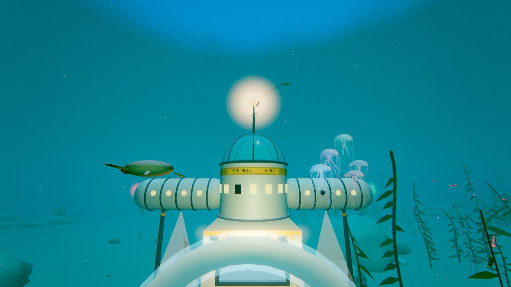

Follow the light down.
From the Sunlit Shelf to The Forgetting. Read the seabed with sonar, chart wrecks and vents, and watch for movement beyond your lamps.
A sea grown from words
Somewhere beneath your words, something is alive.
Take a submarine down. Bring a little of it back.
FREE TO PLAY / NO ACCOUNT / IN YOUR BROWSER

LIVE FROM THE WATER COLUMNNot everything down here has teeth.
Explore a living ocean that gets stranger as the light runs out. Every word in your phrase becomes a species: its colour, its size, its temper, its price.
From the Sunlit Shelf to The Forgetting. Read the seabed with sonar, chart wrecks and vents, and watch for movement beyond your lamps.
Capture living specimens. Find mutations, complete your codex, and let your boat’s wake light up the plankton.
Dock at the Hull, walk your station, sell the catch, and refit. A stronger casing takes you into the water you couldn’t survive before.
The ocean is in the words.
A memory. A place. A sentence that won’t leave you.
Give it to the water.
SEA GENERATOR / READY
THE SAME PHRASE ALWAYS GROWS THE SAME SEA.
A new phrase for everyone, every day.

A little warmth in a very large sea.
There’s a market for what you find, a drydock for what you need, and a tank for the species you’ve brought home. Listen for the beacon when it’s time to turn back.
Read the field guideThe surface can wait.
Keyboard & mouse · Controller · Touch controls